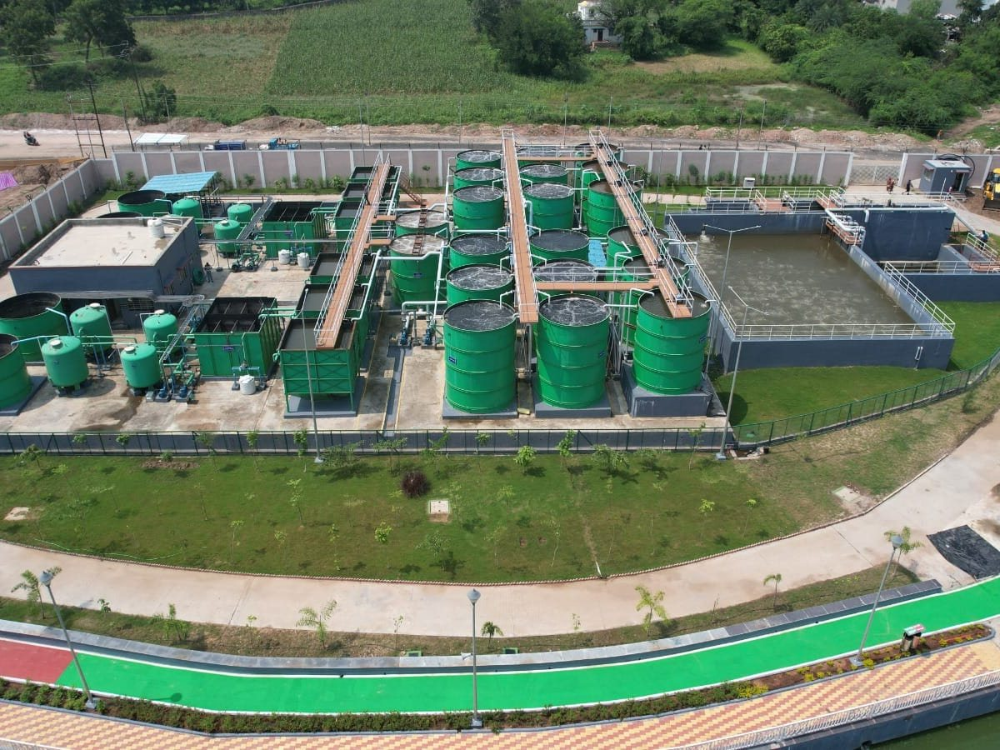
New STP Projects
Turnkey design, supply, installation and commissioning.
- Site visit, flow study & sewage analysis
- Process design & technology selection
- Bio-culture development & trials

Compact, reliable and reuse-ready STPs for industries, commercial buildings, townships and institutions, engineered around your actual sewage flow, load and reuse goal, not a standard catalogue size.
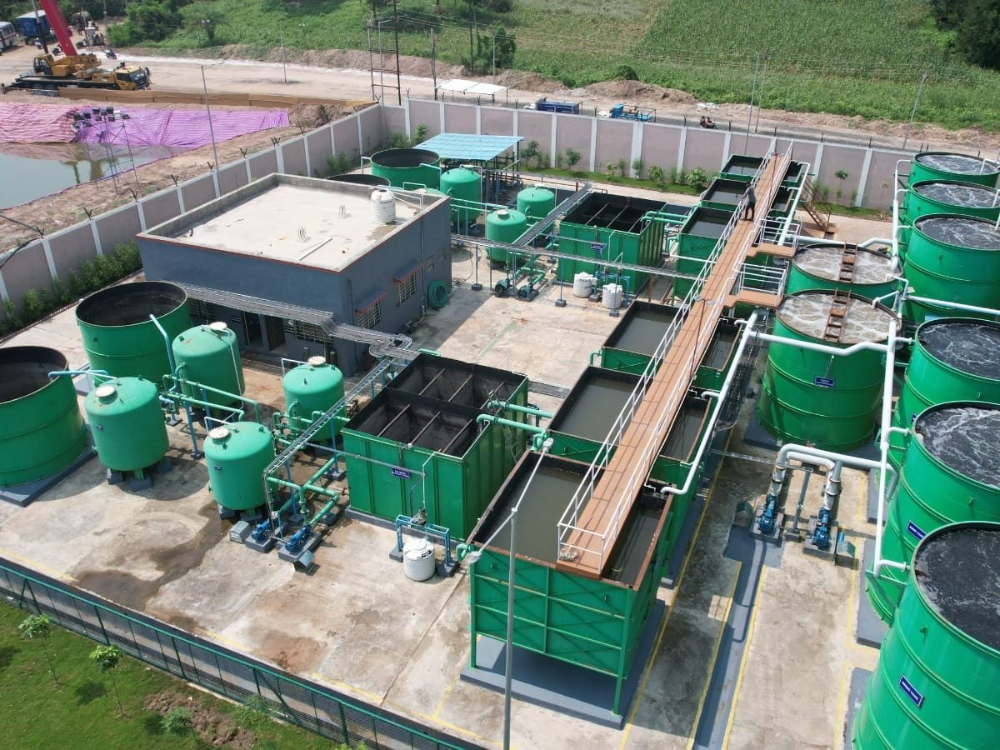
A Sewage Treatment Plant (STP) removes solids, oil, organic matter and pathogens from wastewater generated by toilets, kitchens, bathrooms and canteens. The treated water can be safely discharged within regulatory limits or, more valuably, reused for gardening, toilet flushing, cooling towers, floor washing and other non-potable applications.
SBS Water & Infra Projects Pvt. Ltd. designs, manufactures, installs and commissions STPs that turn domestic and commercial sewage into clean, odour-free water fit for reuse. A well-designed STP helps you:
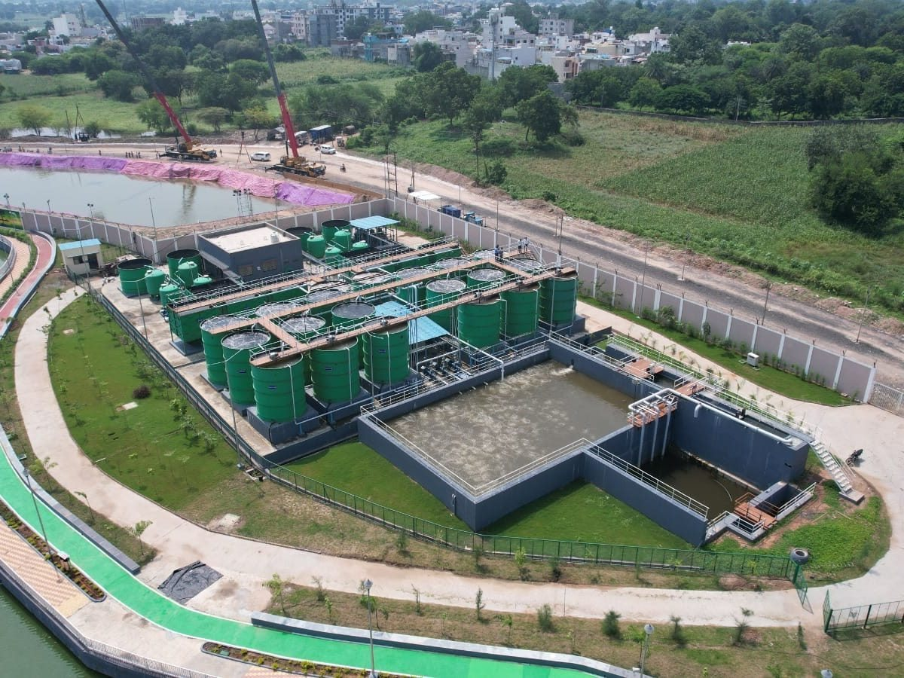
Our standard STP scheme is based on proven MBBR (Moving Bed Biofilm Reactor) technology, followed by multi-stage tertiary polishing and ozone disinfection.
Removes plastics, rags, paper and other floating or coarse solids that could damage pumps and downstream equipment.
Separates oil and grease, mainly from kitchen and canteen wastewater, to protect the biological process.
Equalizes variations in sewage flow and strength across the day so the plant receives a steady, uniform load.
Feed sewage at a controlled rate to the biological treatment section.
Removes nitrogen through denitrification, improving treated-water quality and reducing nutrient load.
The heart of the plant. Bio-media carriers give bacteria a large surface to break down organic matter (BOD/COD); air blowers supply oxygen and keep the media moving.
Inclined tube settlers separate biological sludge from treated water in a compact footprint. Part of the sludge is recirculated to maintain healthy biomass.
Holds clarified water and feeds it to the filtration system.
Removes remaining suspended solids and turbidity.
Removes residual colour, odour and organic traces.
Disinfects the water by destroying bacteria and pathogens, without leaving chemical residue like chlorine.
Stores clean, reuse-ready water for distribution.
Excess sludge is thickened and dewatered in a basket centrifuge, reducing its volume for easy handling and disposal. The separated water returns to the collection tank for re-treatment, so nothing leaves the plant untreated.
We select the right technology based on your space, load, budget and treated-water target.
| Technology | Best Suited For |
|---|---|
| MBBR (Moving Bed Biofilm Reactor) | Compact sites, variable loads, easy operation |
| SBR (Sequential Batch Reactor) | Fluctuating flows, high nutrient removal |
| ASP (Activated Sludge Process) | Large-capacity, conventional plants |
| MBR (Membrane Bioreactor) | Very limited space, highest reuse-quality water |
| UF / RO Polishing | High-grade reuse such as cooling tower or process make-up |
| Ozonation / UV | Chemical-free disinfection |
Sized to your actual flow, sewage characteristics and reuse needs.
MBBR and tube-settler design saves valuable land.
Stable performance even with daily load variations.
Suitable for residential and commercial premises.
Ozone-based final treatment.
With efficient centrifuge dewatering.
Optimized blowers and pumps for lower power cost.
Simple controls with optional PLC/SCADA automation.
Robust build: every plant is fabricated in our own unit at Talawade, Pune, under ISO 9001:2015 quality systems.
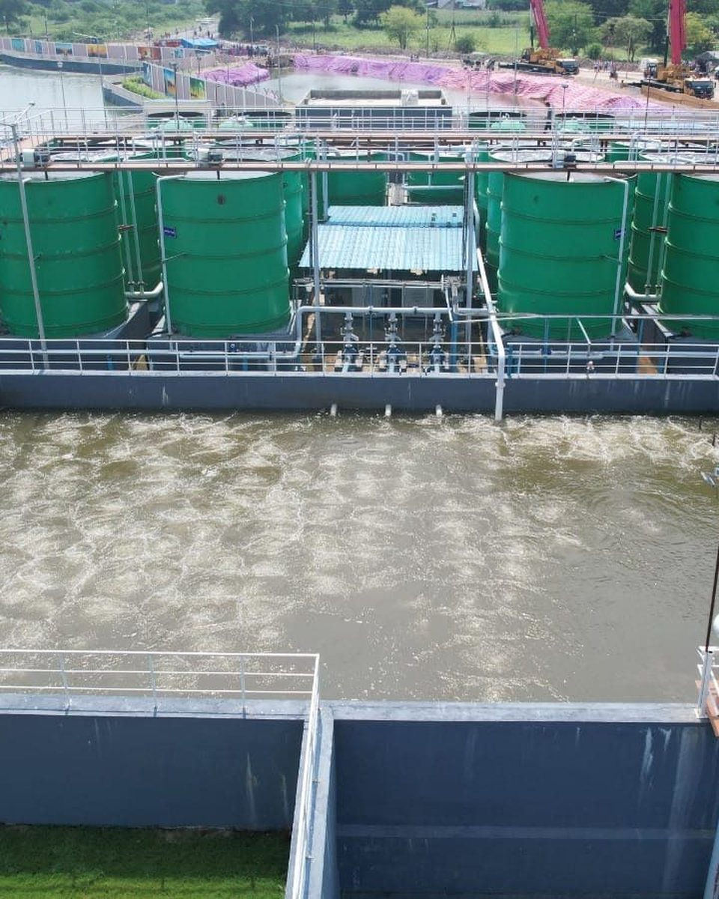
Gardening – landscape irrigation and green belts.
Flushing – toilet and urinal flushing.
Cooling tower make-up – with optional UF / RO polishing.
Washing – floor and vehicle washing.
Site use – dust suppression and construction.
Fire safety – fire-fighting storage.
Industrial plants and factory townships
Sugar mills and distillery colonies
Commercial complexes, malls and IT parks
Hotels, hospitals and institutions
Residential societies and townships
Municipal & government infrastructure projects
From greenfield plants to revamps of ageing STPs, with single-point responsibility from design to commissioning.

Turnkey design, supply, installation and commissioning.
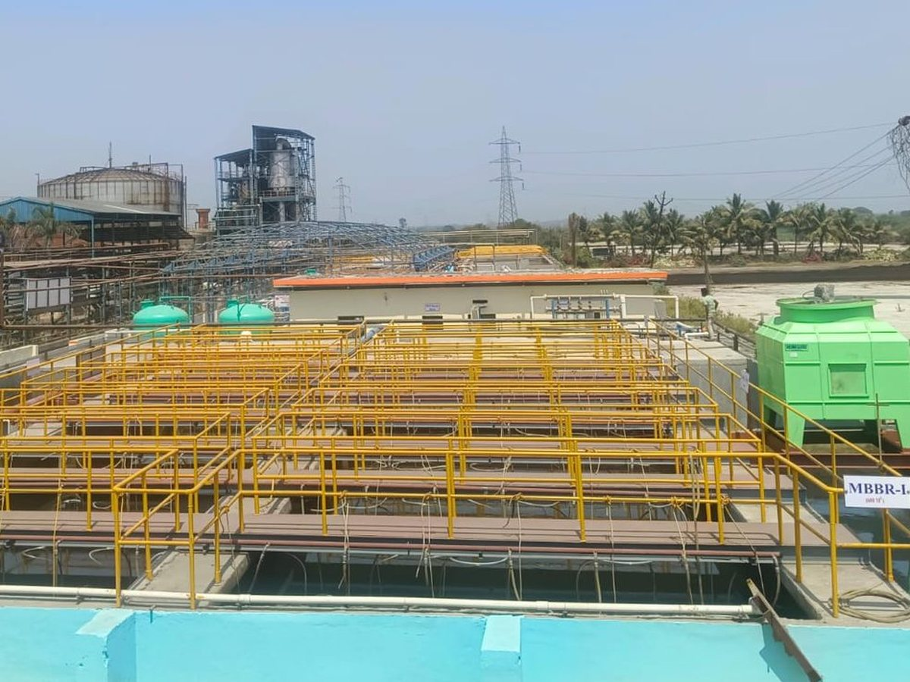
Capacity enhancement and conversion of old ASP plants to MBBR / MBR.
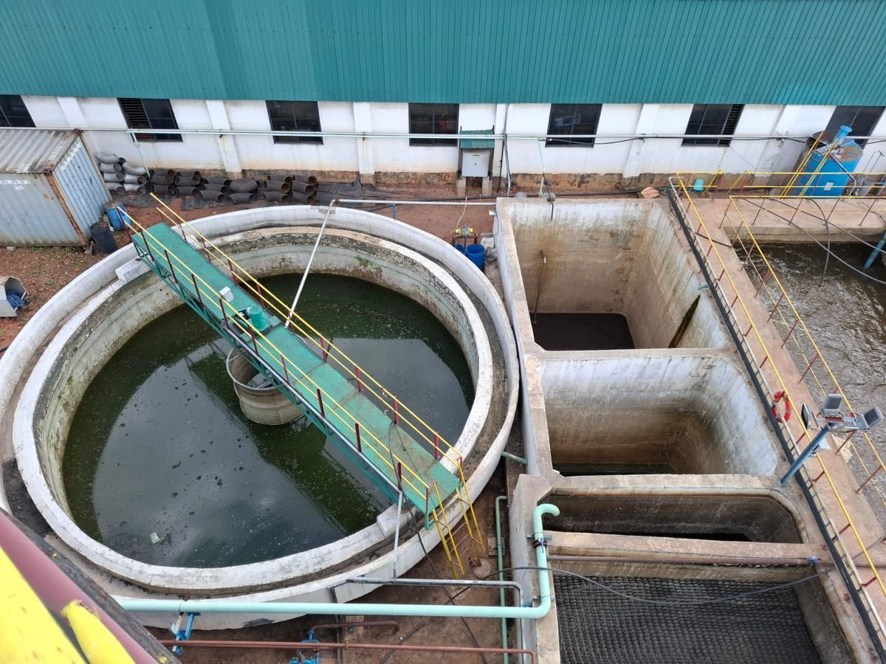
For existing STPs with odour, poor outlet quality or high power use.
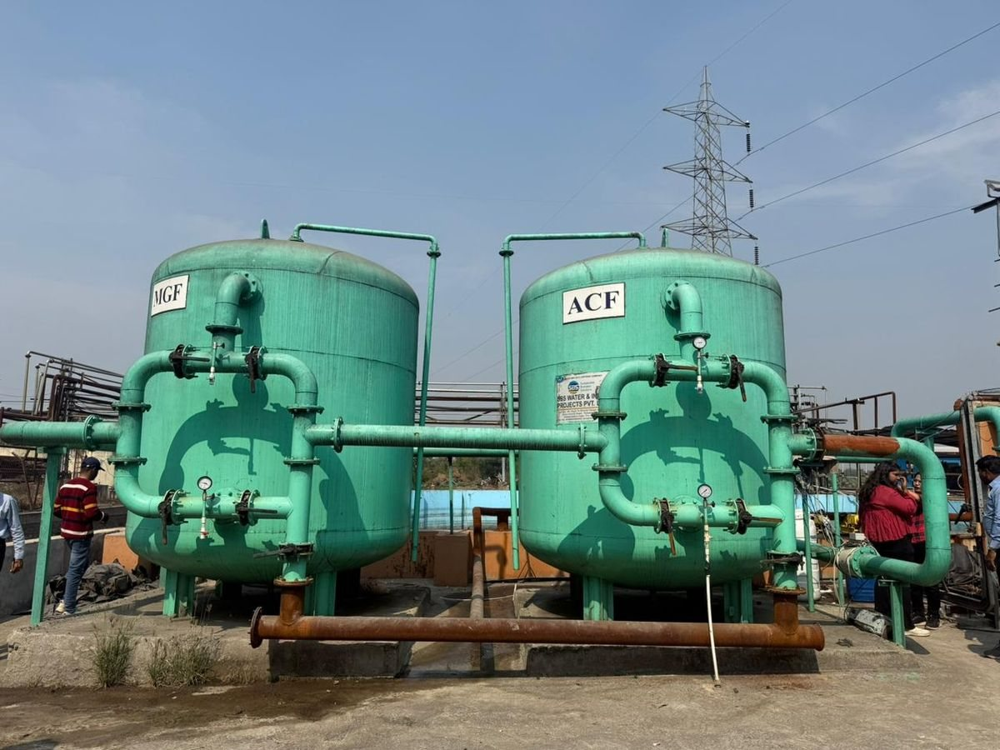
Quality-tested equipment from our in-house fabrication unit.
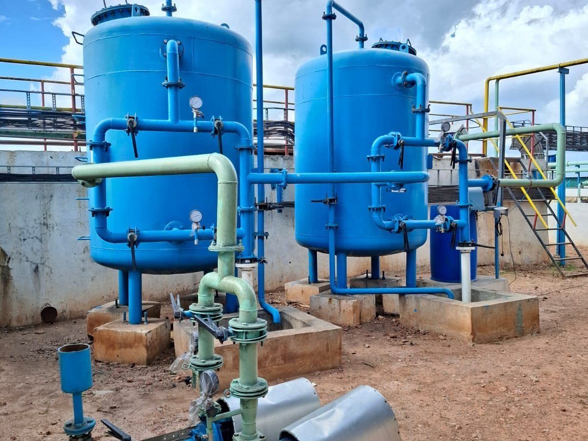
Support for consistent, compliant performance year after year.
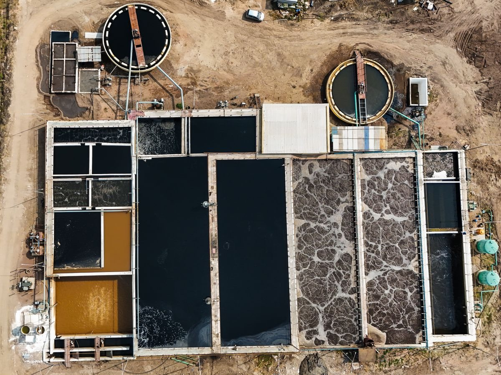
Thickening and dewatering that keep sludge volumes small and easy to handle.
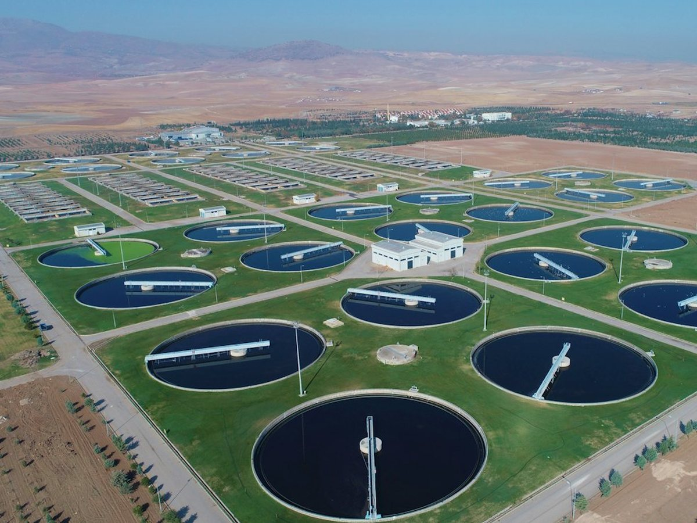
A 4 MLD (40 lakh litres per day) sewage treatment plant delivered by SBS Water, demonstrating our capability to execute large-capacity sewage treatment projects.
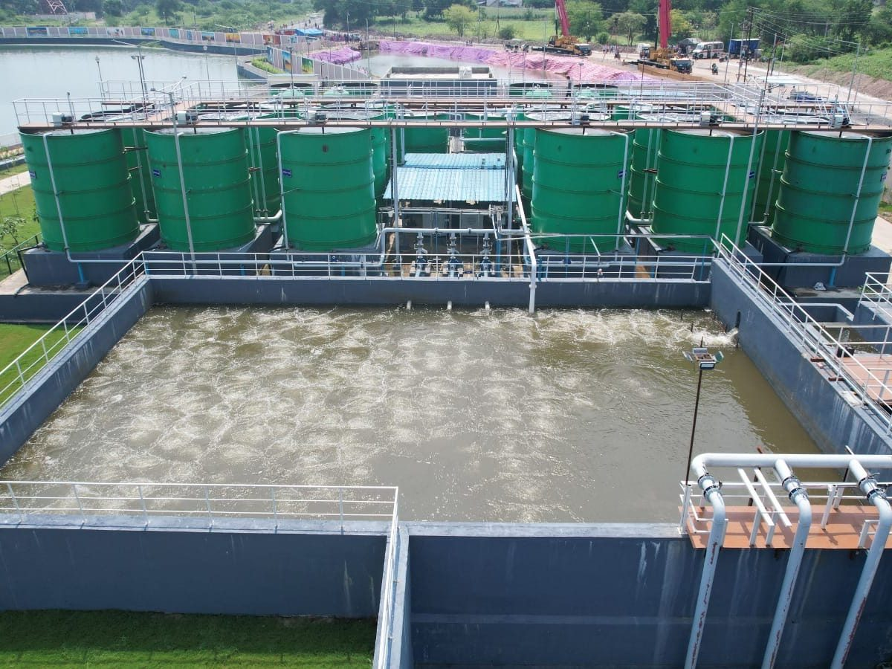
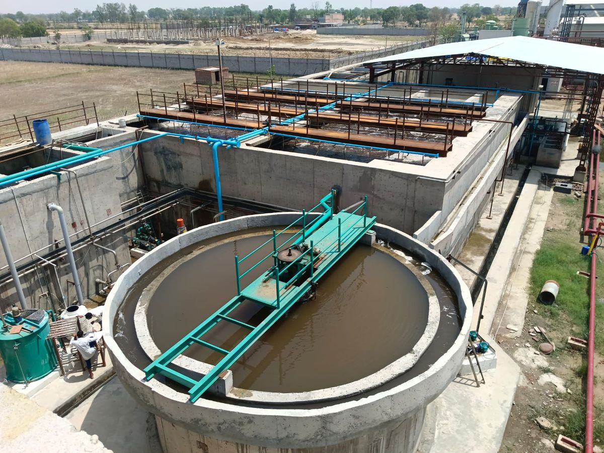
120+ water and wastewater projects for 60+ clients across India and overseas since 2019.
100+ engineers, technicians and project professionals.
Our Talawade, Pune facility ensures quality and timely delivery.
MBBR, SBR, ASP, MBR, UF, RO and ozonation under one roof.
ISO 9001:2015 certified quality systems.
One partner from design to commissioning.
We design STPs from small capacities for individual buildings up to MLD-scale plants for industries and townships, including a 4 MLD plant for BVG India Limited.
It depends on capacity and technology. MBBR and MBR plants need significantly less space than conventional systems. Our team recommends the most compact option for your site.
Yes. With tertiary filtration and ozone disinfection, treated water is suitable for gardening, flushing, cooling towers and other non-potable uses.
Yes. We revamp and upgrade existing plants to increase capacity, improve outlet quality and lower operating costs, often without replacing the whole plant.
Every plant is designed to meet the applicable CPCB/SPCB discharge standards for your location and application.
Share your flow and site details, and our engineers will recommend the right solution.
Request a Proposal